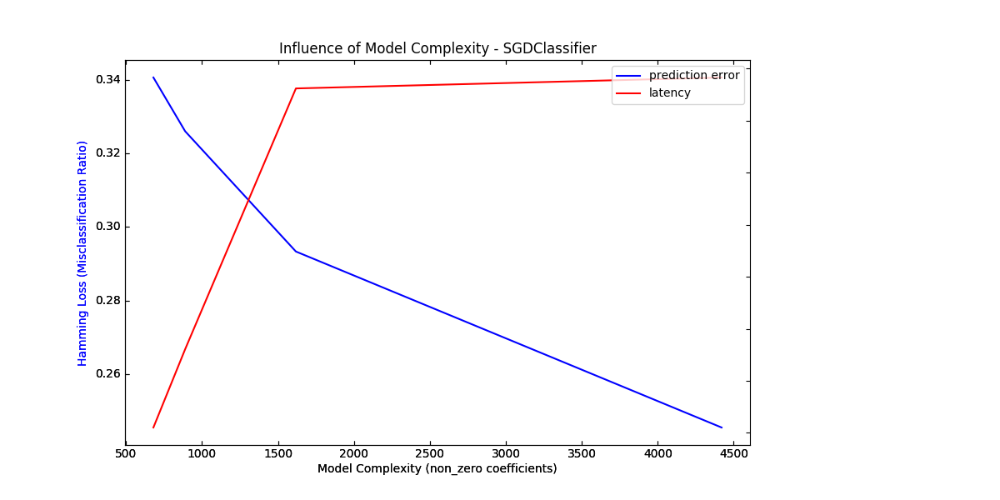
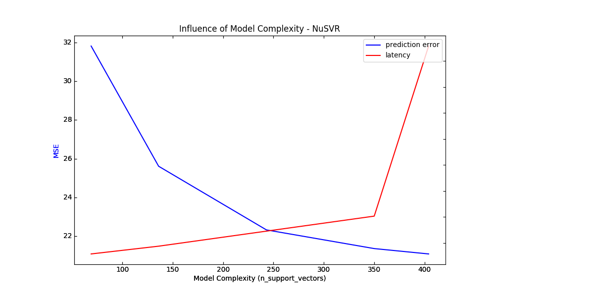
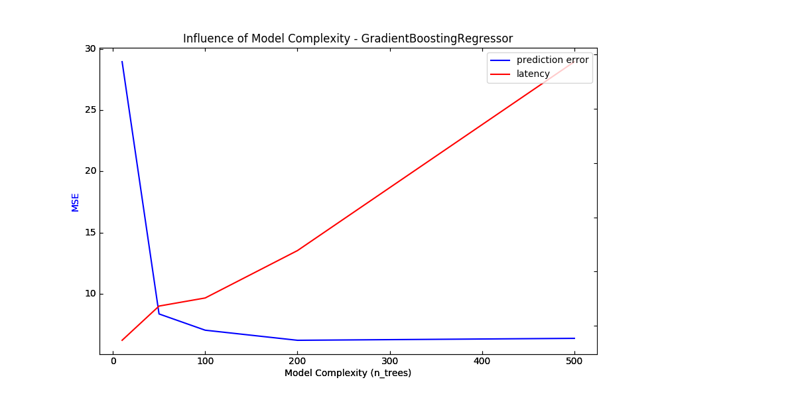

Note
Click here to download the full example code
Model Complexity Influence¶
Demonstrate how model complexity influences both prediction accuracy and computational performance.
The dataset is the Boston Housing dataset (resp. 20 Newsgroups) for regression (resp. classification).
For each class of models we make the model complexity vary through the choice of relevant model parameters and measure the influence on both computational performance (latency) and predictive power (MSE or Hamming Loss).
- 
- 
- 
Out:
Benchmarking SGDClassifier(alpha=0.001, average=False, class_weight=None, epsilon=0.1,
eta0=0.0, fit_intercept=True, l1_ratio=0.25,
learning_rate='optimal', loss='modified_huber', max_iter=None,
n_iter=None, n_jobs=1, penalty='elasticnet', power_t=0.5,
random_state=None, shuffle=True, tol=0.001, verbose=0,
warm_start=False)
Complexity: 4420 | Hamming Loss (Misclassification Ratio): 0.2456 | Pred. Time: 0.027658s
Benchmarking SGDClassifier(alpha=0.001, average=False, class_weight=None, epsilon=0.1,
eta0=0.0, fit_intercept=True, l1_ratio=0.5, learning_rate='optimal',
loss='modified_huber', max_iter=None, n_iter=None, n_jobs=1,
penalty='elasticnet', power_t=0.5, random_state=None, shuffle=True,
tol=0.001, verbose=0, warm_start=False)
Complexity: 1618 | Hamming Loss (Misclassification Ratio): 0.2934 | Pred. Time: 0.027238s
Benchmarking SGDClassifier(alpha=0.001, average=False, class_weight=None, epsilon=0.1,
eta0=0.0, fit_intercept=True, l1_ratio=0.75,
learning_rate='optimal', loss='modified_huber', max_iter=None,
n_iter=None, n_jobs=1, penalty='elasticnet', power_t=0.5,
random_state=None, shuffle=True, tol=0.001, verbose=0,
warm_start=False)
Complexity: 889 | Hamming Loss (Misclassification Ratio): 0.3260 | Pred. Time: 0.017217s
Benchmarking SGDClassifier(alpha=0.001, average=False, class_weight=None, epsilon=0.1,
eta0=0.0, fit_intercept=True, l1_ratio=0.9, learning_rate='optimal',
loss='modified_huber', max_iter=None, n_iter=None, n_jobs=1,
penalty='elasticnet', power_t=0.5, random_state=None, shuffle=True,
tol=0.001, verbose=0, warm_start=False)
Complexity: 680 | Hamming Loss (Misclassification Ratio): 0.3406 | Pred. Time: 0.014208s
Benchmarking NuSVR(C=1000.0, cache_size=200, coef0=0.0, degree=3, gamma=3.0517578125e-05,
kernel='rbf', max_iter=-1, nu=0.1, shrinking=True, tol=0.001,
verbose=False)
Complexity: 69 | MSE: 31.8133 | Pred. Time: 0.000288s
Benchmarking NuSVR(C=1000.0, cache_size=200, coef0=0.0, degree=3, gamma=3.0517578125e-05,
kernel='rbf', max_iter=-1, nu=0.25, shrinking=True, tol=0.001,
verbose=False)
Complexity: 136 | MSE: 25.6140 | Pred. Time: 0.000437s
Benchmarking NuSVR(C=1000.0, cache_size=200, coef0=0.0, degree=3, gamma=3.0517578125e-05,
kernel='rbf', max_iter=-1, nu=0.5, shrinking=True, tol=0.001,
verbose=False)
Complexity: 243 | MSE: 22.3315 | Pred. Time: 0.000726s
Benchmarking NuSVR(C=1000.0, cache_size=200, coef0=0.0, degree=3, gamma=3.0517578125e-05,
kernel='rbf', max_iter=-1, nu=0.75, shrinking=True, tol=0.001,
verbose=False)
Complexity: 350 | MSE: 21.3679 | Pred. Time: 0.001015s
Benchmarking NuSVR(C=1000.0, cache_size=200, coef0=0.0, degree=3, gamma=3.0517578125e-05,
kernel='rbf', max_iter=-1, nu=0.9, shrinking=True, tol=0.001,
verbose=False)
Complexity: 404 | MSE: 21.0915 | Pred. Time: 0.004285s
Benchmarking GradientBoostingRegressor(alpha=0.9, criterion='friedman_mse', init=None,
learning_rate=0.1, loss='ls', max_depth=3, max_features=None,
max_leaf_nodes=None, min_impurity_decrease=0.0,
min_impurity_split=None, min_samples_leaf=1,
min_samples_split=2, min_weight_fraction_leaf=0.0,
n_estimators=10, presort='auto', random_state=None,
subsample=1.0, verbose=0, warm_start=False)
Complexity: 10 | MSE: 28.9793 | Pred. Time: 0.000147s
Benchmarking GradientBoostingRegressor(alpha=0.9, criterion='friedman_mse', init=None,
learning_rate=0.1, loss='ls', max_depth=3, max_features=None,
max_leaf_nodes=None, min_impurity_decrease=0.0,
min_impurity_split=None, min_samples_leaf=1,
min_samples_split=2, min_weight_fraction_leaf=0.0,
n_estimators=50, presort='auto', random_state=None,
subsample=1.0, verbose=0, warm_start=False)
Complexity: 50 | MSE: 8.3398 | Pred. Time: 0.000273s
Benchmarking GradientBoostingRegressor(alpha=0.9, criterion='friedman_mse', init=None,
learning_rate=0.1, loss='ls', max_depth=3, max_features=None,
max_leaf_nodes=None, min_impurity_decrease=0.0,
min_impurity_split=None, min_samples_leaf=1,
min_samples_split=2, min_weight_fraction_leaf=0.0,
n_estimators=100, presort='auto', random_state=None,
subsample=1.0, verbose=0, warm_start=False)
Complexity: 100 | MSE: 7.0096 | Pred. Time: 0.000303s
Benchmarking GradientBoostingRegressor(alpha=0.9, criterion='friedman_mse', init=None,
learning_rate=0.1, loss='ls', max_depth=3, max_features=None,
max_leaf_nodes=None, min_impurity_decrease=0.0,
min_impurity_split=None, min_samples_leaf=1,
min_samples_split=2, min_weight_fraction_leaf=0.0,
n_estimators=200, presort='auto', random_state=None,
subsample=1.0, verbose=0, warm_start=False)
Complexity: 200 | MSE: 6.1836 | Pred. Time: 0.000477s
Benchmarking GradientBoostingRegressor(alpha=0.9, criterion='friedman_mse', init=None,
learning_rate=0.1, loss='ls', max_depth=3, max_features=None,
max_leaf_nodes=None, min_impurity_decrease=0.0,
min_impurity_split=None, min_samples_leaf=1,
min_samples_split=2, min_weight_fraction_leaf=0.0,
n_estimators=500, presort='auto', random_state=None,
subsample=1.0, verbose=0, warm_start=False)
Complexity: 500 | MSE: 6.3426 | Pred. Time: 0.001173s
print(__doc__)
# Author: Eustache Diemert <eustache@diemert.fr>
# License: BSD 3 clause
import time
import numpy as np
import matplotlib.pyplot as plt
from mpl_toolkits.axes_grid1.parasite_axes import host_subplot
from mpl_toolkits.axisartist.axislines import Axes
from scipy.sparse.csr import csr_matrix
from sklearn import datasets
from sklearn.utils import shuffle
from sklearn.metrics import mean_squared_error
from sklearn.svm.classes import NuSVR
from sklearn.ensemble.gradient_boosting import GradientBoostingRegressor
from sklearn.linear_model.stochastic_gradient import SGDClassifier
from sklearn.metrics import hamming_loss
# #############################################################################
# Routines
# Initialize random generator
np.random.seed(0)
def generate_data(case, sparse=False):
"""Generate regression/classification data."""
bunch = None
if case == 'regression':
bunch = datasets.load_boston()
elif case == 'classification':
bunch = datasets.fetch_20newsgroups_vectorized(subset='all')
X, y = shuffle(bunch.data, bunch.target)
offset = int(X.shape[0] * 0.8)
X_train, y_train = X[:offset], y[:offset]
X_test, y_test = X[offset:], y[offset:]
if sparse:
X_train = csr_matrix(X_train)
X_test = csr_matrix(X_test)
else:
X_train = np.array(X_train)
X_test = np.array(X_test)
y_test = np.array(y_test)
y_train = np.array(y_train)
data = {'X_train': X_train, 'X_test': X_test, 'y_train': y_train,
'y_test': y_test}
return data
def benchmark_influence(conf):
"""
Benchmark influence of :changing_param: on both MSE and latency.
"""
prediction_times = []
prediction_powers = []
complexities = []
for param_value in conf['changing_param_values']:
conf['tuned_params'][conf['changing_param']] = param_value
estimator = conf['estimator'](**conf['tuned_params'])
print("Benchmarking %s" % estimator)
estimator.fit(conf['data']['X_train'], conf['data']['y_train'])
conf['postfit_hook'](estimator)
complexity = conf['complexity_computer'](estimator)
complexities.append(complexity)
start_time = time.time()
for _ in range(conf['n_samples']):
y_pred = estimator.predict(conf['data']['X_test'])
elapsed_time = (time.time() - start_time) / float(conf['n_samples'])
prediction_times.append(elapsed_time)
pred_score = conf['prediction_performance_computer'](
conf['data']['y_test'], y_pred)
prediction_powers.append(pred_score)
print("Complexity: %d | %s: %.4f | Pred. Time: %fs\n" % (
complexity, conf['prediction_performance_label'], pred_score,
elapsed_time))
return prediction_powers, prediction_times, complexities
def plot_influence(conf, mse_values, prediction_times, complexities):
"""
Plot influence of model complexity on both accuracy and latency.
"""
plt.figure(figsize=(12, 6))
host = host_subplot(111, axes_class=Axes)
plt.subplots_adjust(right=0.75)
par1 = host.twinx()
host.set_xlabel('Model Complexity (%s)' % conf['complexity_label'])
y1_label = conf['prediction_performance_label']
y2_label = "Time (s)"
host.set_ylabel(y1_label)
par1.set_ylabel(y2_label)
p1, = host.plot(complexities, mse_values, 'b-', label="prediction error")
p2, = par1.plot(complexities, prediction_times, 'r-',
label="latency")
host.legend(loc='upper right')
host.axis["left"].label.set_color(p1.get_color())
par1.axis["right"].label.set_color(p2.get_color())
plt.title('Influence of Model Complexity - %s' % conf['estimator'].__name__)
plt.show()
def _count_nonzero_coefficients(estimator):
a = estimator.coef_.toarray()
return np.count_nonzero(a)
# #############################################################################
# Main code
regression_data = generate_data('regression')
classification_data = generate_data('classification', sparse=True)
configurations = [
{'estimator': SGDClassifier,
'tuned_params': {'penalty': 'elasticnet', 'alpha': 0.001, 'loss':
'modified_huber', 'fit_intercept': True, 'tol': 1e-3},
'changing_param': 'l1_ratio',
'changing_param_values': [0.25, 0.5, 0.75, 0.9],
'complexity_label': 'non_zero coefficients',
'complexity_computer': _count_nonzero_coefficients,
'prediction_performance_computer': hamming_loss,
'prediction_performance_label': 'Hamming Loss (Misclassification Ratio)',
'postfit_hook': lambda x: x.sparsify(),
'data': classification_data,
'n_samples': 30},
{'estimator': NuSVR,
'tuned_params': {'C': 1e3, 'gamma': 2 ** -15},
'changing_param': 'nu',
'changing_param_values': [0.1, 0.25, 0.5, 0.75, 0.9],
'complexity_label': 'n_support_vectors',
'complexity_computer': lambda x: len(x.support_vectors_),
'data': regression_data,
'postfit_hook': lambda x: x,
'prediction_performance_computer': mean_squared_error,
'prediction_performance_label': 'MSE',
'n_samples': 30},
{'estimator': GradientBoostingRegressor,
'tuned_params': {'loss': 'ls'},
'changing_param': 'n_estimators',
'changing_param_values': [10, 50, 100, 200, 500],
'complexity_label': 'n_trees',
'complexity_computer': lambda x: x.n_estimators,
'data': regression_data,
'postfit_hook': lambda x: x,
'prediction_performance_computer': mean_squared_error,
'prediction_performance_label': 'MSE',
'n_samples': 30},
]
for conf in configurations:
prediction_performances, prediction_times, complexities = \
benchmark_influence(conf)
plot_influence(conf, prediction_performances, prediction_times,
complexities)
Total running time of the script: ( 0 minutes 17.159 seconds)